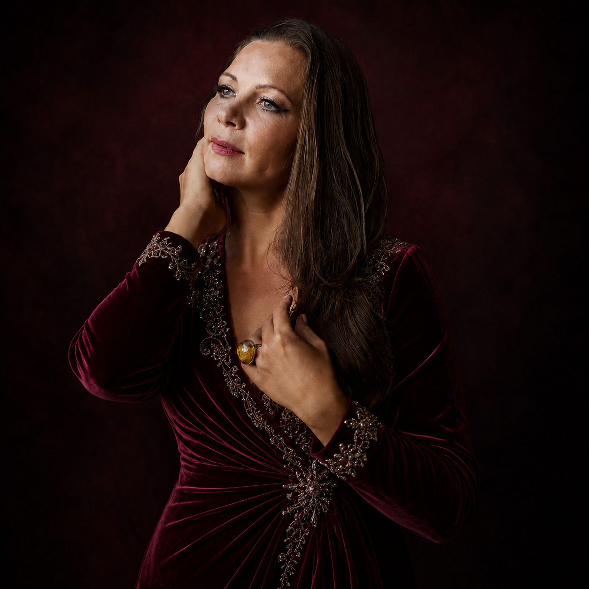

Чайковский
Иоланта — Иоланта
Евгений Онегин — Татьяна
Пиковая дама — Лиза

Opera repertoire
Русская опера
Иоланта — Иоланта
Евгений Онегин — Татьяна
Пиковая дама — Лиза
Князь Игорь — Ярославна
Царская невеста — партии сопранового репертуара
Снегурочка — партии сопранового репертуара
European repertoire
Мадам Баттерфляй — Чио-чио-сан
Тоска — Тоска
Аида — Аида
Травиата — Виолетта
Кармен — Микаэла
Ариадна на Наксосе — Ариадна